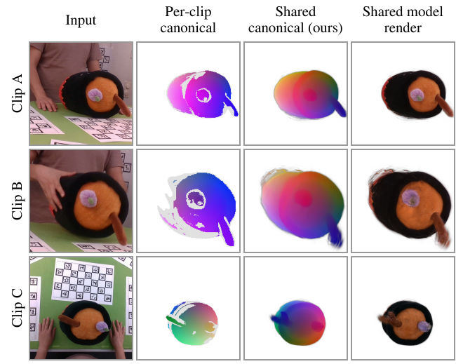

InterTwin: Interactable Digital Twins of Deformable Objects from Multi-Clip Hand Interaction

Abstract
Physical digital twins of deformable objects can be reconstructed from multi-view video of hands manipulating them, but current methods calibrate one twin per short sequence and couple the hands to the object through contacts that stay fixed for the whole sequence. Unscripted manipulation breaks both assumptions: the same object appears in many short clips that are not connected in time, and the hands grasp, release, push and re-grasp it. We build a hand-driven physical twin of a deformable object learned from many multi-view clips. First, all clips are aligned to one shared canonical model: a pretrained backbone with lightweight adapters is fine-tuned for dense surface correspondence on labels rendered from per-clip Gaussian fits, and a global fit shares geometry, appearance and deformation kernels across clips. Second, hand-driven dynamics are built on this canonical model with contact that changes over time. On a new eight-camera tabletop capture of a plush toy with 26 clips, the shared canonical model agrees across clips to 2.1 mm (median) against 3.4 mm for pairwise non-rigid merging and 168 mm for ICP, and fine-tuning raises correspondence accuracy within 1 cm on held-out clips from 68.9% to 80.6%. An error decomposition shows that the calibrated physics follows held-out grasp-lift-hold clips once the contact state is known, and identifies contact-state inference from hand motion as the main open problem.
Results on the pot plushy
Capture: 8 cameras (RGB + IR stereo, 30 Hz), one plush toy manipulated by a person for five minutes, cut into 26 usable clips. Single take, single object: results are preliminary and the setup will be extended.
Multi-clip alignment

| Alignment of 6 clips | Median (mm) ↓ | <10 mm (%) ↑ |
|---|---|---|
| None (per-clip frames) | 203.4 | 0.0 |
| ICP | 167.9 | 0.0 |
| Features, rigid sync. | 5.3 | 82.8 |
| Features, non-rigid | 3.4 | 87.2 |
| Shared model (ours) | 2.1 | 95.2 |
| Within-clip floor | 0.8–1.3 | 97.3–98.8 |
Cross-clip consistency: distance in the shared canonical frame between two observations of a point tracked across a clip boundary (independent multi-view tracks).
| PCK (%) ↑ | 5 mm | 10 mm | 20 mm |
|---|---|---|---|
| Held-out clips, frozen | 45.5 | 68.9 | 83.3 |
| Held-out clips, fine-tuned | 58.7 | 80.6 | 91.6 |
| Held-out cameras, frozen | 38.4 | 61.2 | 78.3 |
| Held-out cameras, fine-tuned | 52.2 | 76.6 | 90.7 |
Dense correspondence, same head and training in both rows; mean of three seeds (std ≤ 0.4 points).
Cost: sharing one model across all clips lowers object PSNR from 27.5 dB (independent per-clip fits) to 24.7 dB.
Videos
Real outputs on the pot plushy capture; clips were rendered by earlier checkpoints of the pipeline. The feed-forward reconstructions use no per-clip fitted parameters.
Hand-driven deformation
Held-out windows (about 2 s), half speed, one of the eight cameras. Panels: input, then rendered colour with the hand mesh (transparent), rendered depth, normals, dense global correspondences and kernel ellipsoids, and the student's rendered colour and kernels, driven only by the recorded hands. Every panel except the input is a rendering. The student never saw these clips.
Press from the top with both hands, then release (error at window end: student 3.5 mm vs 19.3 mm for a frozen shape).
Sideways squeeze, release, shape recovers (3.8 mm vs 30.5 mm).
A hand grabs the spoon and turns the pot by it. Here the student is only marginally better than a frozen shape because the non-rigid change is small.
One clip, all modalities
Same clip, one of the eight cameras. Top row: the input (only non-rendered panel), the rendered colour of the hand-driven twin with the hand mesh, rendered depth (near to far) and rendered surface normals. Bottom row: the dense global correspondences (canonical x, y, z mapped to RGB), the kernels drawn as ellipsoids (coloured by their canonical position), the prediction of the student model, and the student kernels. The hand is drawn transparent in every panel.
Dense global correspondences: shared canonical xyz space
Left: input views (two of the eight cameras). Right: the reconstruction coloured by its position in the global canonical model (canonical x, y, z mapped to RGB). The same surface point has the same colour in every frame and every view, so the stick, lid, and body keep their colour while the hands move and deform the toy. Two held-out spoon sequences, half speed.
Feed-forward reconstruction and hands
Top: input views. Bottom: object reconstructed by the feed-forward model (matcher, hand-conditioned decoder, joint solver) together with the solved hands (left blue, right orange).
Object-only feed-forward reconstruction compared with the input views (per-view PSNR shown in the video):
Contact
Contact: zakourmarsil@gmail.com